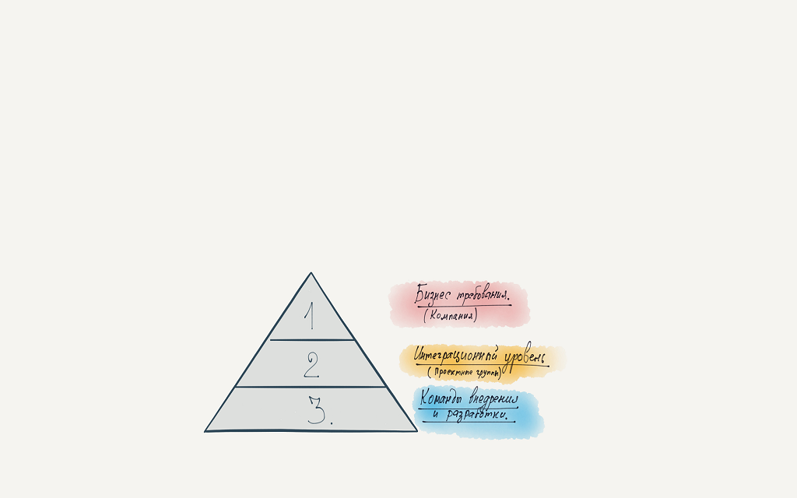
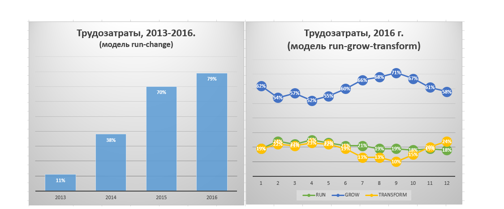
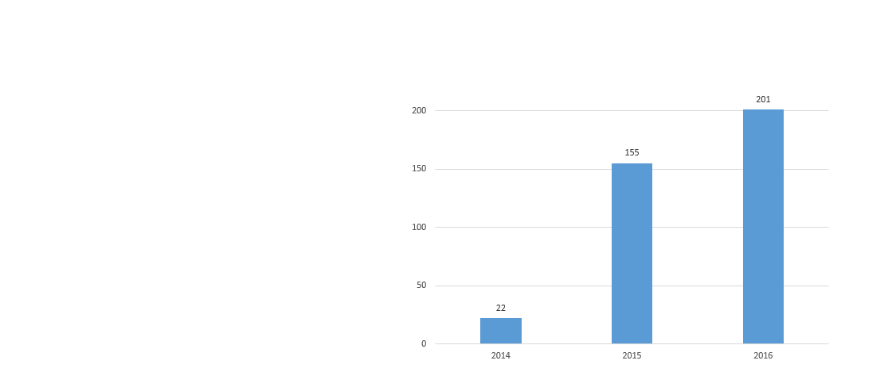
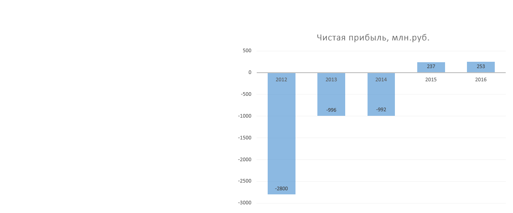

Югория и Agile. Подходы, которые сработали.
Карач С.В.
Югория и Agile.
Подходы, которые сработали.
Сергей Карач,
Директор по информационным технологиям, операционный директор,
заместитель генерального директора.
О чем мы будем говорить:
- Как Югории удалось за короткий период модернизировать систему управления.
- Какие подходы мы применяли в планировании
- Как получилась пресловутая "би-модальность"
- О характерных особенностях этапов развития...
Реальные примеры и цифры.
Антикризисное управление:
- Чистая прибыль 2012 г. - минус 2.8 млрд.
- Чистая прибыль 2013 г. - минус 0.9 млрд.
- Чистим портфель.
- Освобождаем компанию от горе-проектов интеграторов
- Начинаем трансформацию (без объявления).
Новый взгляд на производство страховых услуг:
- Современная страховая компания - это ИТ-компания с новой культурой.
- Концепции сервисного подхода недостаточно
- Сервис + секретный ингредиент = непрерывный поток
- Здоровая культура - лечит сломанный процесс
- Наша идеология - пробовать, ошибаться и исправлять, как можно быстрее.
Стадии внедрения
- Стадия №1. Переключение (подчинение).
Делаем точно по книге и как сказал эксперт.
- Стадия №2. Адаптация к контексту.
- Адаптируем методику под свой контекст.
- Глубокое понимания методологии и принципов.
- Стадия №3. Мудрость.
- Создаем новое понимание, идею.
- Переходим на новую ступень и отделяемся от заданного учения.
Несколько вех
- 2013 - scrum (1 команда)
- 2014 - scrum (3 команды)
- 2015 - scrum, kanban
- 2016 - kanban (5 команд)...
Как повлияли первые изменения 2013-2015 гг:
- Высокая скорость и эффективность трансформации
- Компания - как балласт.
- Эффект "сердечного приступа".
- Завышенные ожидания после внедрений.
- NoEstimate подход - создает в компании напряжение.
- Становятся заметными противоречия на границе культур.
Что мы начали делать в 2016 году
- Начали сближение культур
- Приступили к созданию экранов (защиту)
- Создали адаптеры и постоянно их дорабатываем
- Мы "услышали сердечный ритм компании"
В некотором смысле канбан - это торянский конь.
- Договариваемся, что мы действуем инкрементально.
- Развитие - эволюционное.
- Мы четко определяем роли, процессы, зоны ответственности...
- Визуализируем работу
- Применяем WIP, управляем потоком
- Внедряем и следуем политикам перехода
- Улучшаем себя коллективно
Как взаимодействуют культуры?
Что происходит?
- Новая культура - это антитело для вашей компании
- Старая культура - начинает ее атаковать.
- Поэтому, на первом этапе - мы создали экраны между культурами.
- И только после этого - адаптеры.
Как все это соединить в компании?
Уровни понимания требований (по Виггерсу)

Единый операционный ритм.
Собственная ИТ платформа:
- Мы последовательно создаем собственную ИТ-платформу.
- С собственными API и модульной, слабосвязанной архитектурой.
- Наше производство становится технологичным.
И, наконец - стоимость:
- Промышленное ПО не может стоить миллионы долларов.
- Стоимость многих проектов ниже рыночных аналогов в 7-10-100 раз.
- Доля участия интеграторов близка к 0%.
- Непрерывно наращиваем долю Grow и Transform
Доля трудозатрат на развитие и трансформацию:

«Югория» признана лидером по качеству урегулирования
убытков по результатам исследования, проведенного информагентством РБК.
Проект 2016 года.
"Лучшее отраслевое решение"
в номинации "Самостоятельная
разработка" за проект связанный
с трансформацией продаж
и внедрением единой
фронт-офисной системы.
Увеличилось кол-во выпускаемых релизов
- 2013 - 6 релизов,
- 2014 - 22 релиза,
- 2015 - 155 релизов,
- 2016 - 201 релизов.

И что на самом деле важно:
Компания начала зарабатывать

Вырос NPS:
- 2014 г. - начинали с отметки 14%
- Сейчас в 60-65%
Сократилось время time-to-market:
Речь идет о принципиально новых для нас скоростях вывода продуктов на рынок
в 10тки раз.
О чем был рассказ:
- Мы на пути к познанию, что такое гибкость и ...
- мы все еще ищем нашу новую модель управления.
- Гибкость - это речь о культуре, а не о технологии программной разработки.
- Используйте адаптеры, сближайте культуры.
- Ошибайтесь чаще, чем ваши конкуренты.
- Начинайте трансформацию .... с собственного сознания.